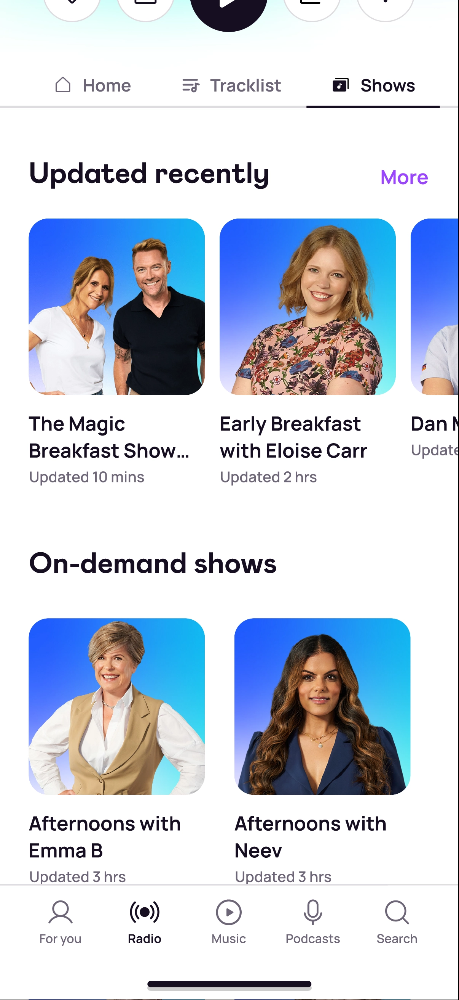
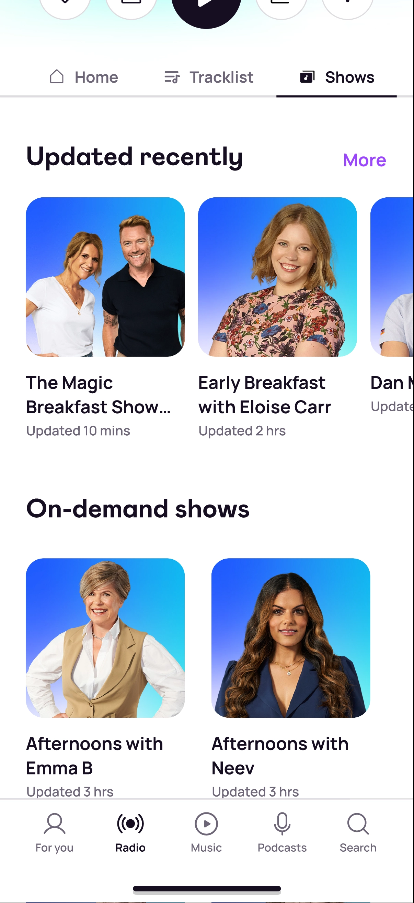

Radio programme schedule
Product
A schedule page that enables users to check future radio episodes and play on-demand recorded radio episodes within the Rayo app Open link. [Rayo is an app that delivers radio and podcast content owned by Bauer Media]
Role
Research, product design, testing, design system
Overview
This case study demonstrates how we, the design team validate and invalidate our product team's assumptions through user research and testing. Thus we can focused our effort on delivering the best value to our users, a schdule page with playback functionality.
Problem
Rayo listeners need a way to find catchup shows, so that they can listen to their favourite shows that they missed.
Goal
Define the journey of finding a catchup show that is natrual for our users based on their listening habits. Design the UX/UI of the new journey.
Hypothesis
Product wanted to introduce a station brand page with an aim to please our loyal radio listeners with content promotions, music suggestions, and potentially cross pollinate to other stations with similar genres of music. As a feature parity, we will also add a schedule page for each station because we have it on our web platform.
Improving the radio page
Radio page is the starting point of the journey, we took this opportunity to improve the experience of the current radio page. We explore many directions, and have selected 3 options for user testing, from the MVP to the most complex version.
[Hover screenshots below, might takes a few seconds to load]
Station brand page stimulus
Product's hypothesis suggests that a station page can make users feel more connected to the brands they recognise and love. They would like to see when their favourite presenters are on-air. On the hand, this page is also a good way to help new users make an informed decision when picking a station.
 

Identify the core value
Based on user testing, majority found the brand page layout too busy, and saw it as advertisment rather than personalised content discovery.
Many liked the page with bigger thumbnails, but there were confusions about whether the stations are on-demand shows or live stations.
The schedule page met their expactations, and was very well received. Based on our playback data and user research, our users tend to find catchup shows from the schedule. This is because they register radio show as episodic content, instead they regonise radio show with dates.

Pivot
The feedback we received clearly shows that a station page isn't what our users are looking for, and it's not worth the effort required to built this page. We synthesised the data and present back to Product, then try to aligned with Product with the new direction we proposed.

Focus on delivering value
We concluded that if we want to keep pursuing the concept of a station page, it would require further research, and more thougths on what value we can provide. The epic has transformed from station page epic into schedule page epic, and we would focus our effort on developing the schedule page.


Final iterations
Since checking the schedule and finding catchup show is one of the main goal of our users, a schedule button was added to the For you page (homepage) as a secondary button. We also moved the schedule button to a more prominent position for easy access on the radio page. The user can also access the schedule on the maxi-player when listening to a live station.
Using the selected station name as the page title is a challenge for the devs, and is not recommeded by iOS's navigation guidelines. Thus we moved it to underneath the station disc. Schedule vary based on the selected local split, to clarify which split of the station schedule is on screen, we added the local split name in bracket, with a marquee animation if the name exceeded the screen width. We also changed the edit button from an icon button to a text button for better affordance.
We introduce a rectangular progress bar around the thumbnail image, and added an on-air tag next to the section title. They were introduced to distictly indicate the follow are live radio stations, not on-demand radio show.